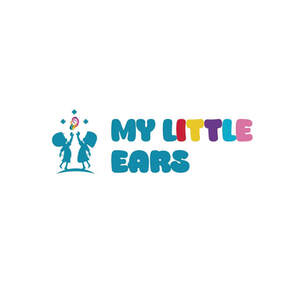

Trade Mark Journal No.2026/006 6 February 2026
UK00004327802 21 January 2026 (9,10,35,41,44)

- Class 9
- Downloadable software for hearing assessment; Downloadable software for glue ear assessment; AI for glue ear management; Downloadable software for audiology diagnostics; Mobile applications for hearing screening; Software for managing audiology test results; Software for patient data management in audiology; Software incorporating artificial intelligence for medical diagnostics; Digital assessment tools for hearing health; Downloadable educational content relating to hearing.
- Class 10
- Audiological apparatus and instruments; Hearing testing apparatus; Tympanometers; Diagnostic medical devices for hearing assessment; Hearing screening devices; Glue Ear Screening Devices; Medical devices for examining the ear; Otoscopes; Medical diagnostic equipment for children; Hearing diagnostic equipment for children; Auto-inflation baloon; Parts and fittings for all the aforesaid goods.
- Class 35
- Business management of healthcare clinics; Administration of medical practices; Business consultancy relating to healthcare services; Marketing and promotional services for healthcare providers; Organisation and management of patient referral programmes.
- Class 41
- Educational services relating to hearing health; Training services in audiology awareness; Workshops relating to children’s hearing health; Provision of educational information relating to hearing; Online educational courses relating to ear health; Publishing of educational materials relating to hearing; Awareness programmes relating to hearing conditions.
- Class 44
- Audiology services; Paediatric audiology services; Hearing testing services; Hearing screening services; Tympanometry testing services; Diagnostic hearing assessments; Medical diagnostic services relating to hearing; Ear health assessment services; Screening and diagnosis of hearing conditions in children; Advice and consultancy relating to hearing health; Treatment and management of hearing disorders; Clinical services relating to glue ear; Medical services for children; Healthcare services for children; Provision of information relating to hearing health; Preventative healthcare services relating to hearing; Bone Conduction Hearing Aid Leasing Services; Glue Ear Screening Services; The Universal Glue Ear Screening Programme; Hearing fitting Services.
My Little Ears Ltd